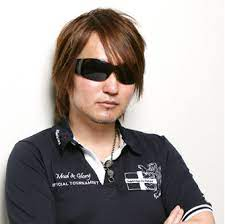
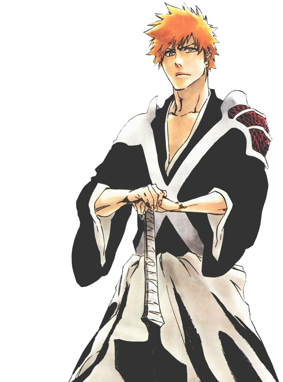

|  |
Тайто Кубо (яп. 久保 帯人 Кубо Тайто, /tаɪtoʊ/), настоящее имя — Нориаки Кубо (яп. 久保 宣章 Кубо Нориаки) — японский мангака. Он наиболее известен своей мангой «Блич». Часто встречаются ошибочные варианты написания его псевдонима, например: Титэ Кубо, Кубо Тайт, Куботайт, Куботайто, Куботитэ. |
|
|  |
Старшеклассник Итиго Куросаки видит другую сторону этого мира, в том числе и духов. Однажды он встречает девушку, которая умеет отправлять души умерших туда, где им положено быть. Случайно он получает её способности и начинает истреблять злых духов. |